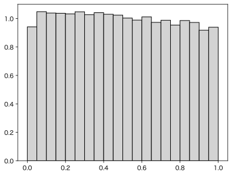

Kruskal-Wallis（クラスカル・ウォリス）検定は、Mann-WhitneyのU検定を3群以上に拡張したノンパラメトリックな検定です（2群でも使えます）。どの群も同じ分布だというのが帰無仮説です（中央値が等しいことではありませんが、同じ分布なら結果的に中央値も等しくなります）。パラメトリックな検定では（等分散の場合の）分散分析に対応します。
通常は、順序に直して、各群の個数 $n_i$、順位和 $R_i$ を使って
\[ H = \frac{12}{N(N + 1)} \sum_{i=1}^k \frac{R_i^2}{n_i} - 3(N + 1) \]が（中心極限定理により）近似的に自由度 $k-1$ の $\chi^2$ 分布に従うことを使います。$k$ は群数、$N$ は総数です。
上の式を変形して
\[ H = \frac{12}{N(N + 1)} \sum_{i=1}^k n_k \left( \frac{R_i}{n_i} - \frac{N + 1}{2} \right)^2 \]と書けば、順位平均 $R_i/n_i$ の帰無仮説における値 $(N+1)/2$ からの偏差の2乗和だから $\chi^2$ 分布で近似できることがわかりやすいと思います。
ただし、タイがあると順位の分散が小さくなるので、その補正も必要です。
Pythonでは scipy.stats.kruskal で上記の計算ができます。
from scipy import stats x = [1, 2, 3, 4] y = [2, 4, 5, 6] z = [5, 7, 8, 9] stats.kruskal(x, y, z)
KruskalResult(statistic=np.float64(7.41431095406361), pvalue=np.float64(0.024547249270391307))
行列で与えた場合は次のようになります。
from scipy import stats
groups = [
[1, 2, 3, 4],
[2, 4, 5, 6],
[5, 7, 8, 9]
]
stats.kruskal(groups, axis=-1).pvalue
シミュレーションをしてみましょう。1から5までの整数を10個ずつ乱数で作り、$p$ 値の分布が一様になることを確かめます。
import matplotlib.pyplot as plt
import numpy as np
from scipy import stats
rng = np.random.default_rng()
def p():
x = rng.integers(1, 6, 10)
y = rng.integers(1, 6, 10)
z = rng.integers(1, 6, 10)
return stats.kruskal(x, y, z).pvalue
a = [p() for _ in range(100000)]
plt.hist(a, color="lightgray", edgecolor="black", bins=np.arange(21)/20, density=True)
plt.savefig("kruskal.svg", bbox_inches="tight")

だいたい良さそうです。
以上は近似値です。厳密に計算するには、permutation testを使います。Pythonでは scipy.stats.permutation_test を使うのが便利です。
import numpy as np
from scipy import stats
groups = [
[1, 2, 3, 4],
[2, 4, 5, 6],
[5, 7, 8, 9]
]
def kw_statistic(*samples, axis=-1):
return stats.kruskal(*samples, axis=axis).statistic
result = stats.permutation_test(
groups,
kw_statistic,
permutation_type="independent",
n_resamples=np.inf,
alternative="greater",
vectorized=True,
batch=1000,
)
print("exact p =", result.pvalue) # 0.01471861471861472
近似値が 0.025 であったのに対して、厳密な値は 0.015 です。
np.inf は全部の置換を試します。サンプルサイズが大きい場合には非現実的ですので、適当な値にします。
Kruskal-Wallis検定で例えば3群の分布に有意な差があることがわかれば、次にDunn（ダン）検定＋Holm（ホルム）の多重比較補正、あるいはSteel-Dwass（スティール・デュワス）検定をして、3群のうちどのペアが有意に異なっているかを調べる、というのが伝統的（）な方法です。